Elegimos este proyecto porque nos interesa estudiar el problema del suicidio, que es una de las principales causas de muerte en el mundo y más dolorosas, por lo silenciosa que puede ser. Además, tiene múltiples factores de riesgo, entre ellos el nivel socioeconómico. Según la OMS, el suicidio se puede prevenir con intervenciones oportunas, basadas en evidencia y a menudo de bajo costo. Para ello, es necesario contar con datos e información confiables y actualizados sobre el fenómeno. Por eso, decidimos usar las herramientas que nos provee la ciencia de datos para estudiar la relación entre la tasa de suicidios por zona y el ingreso por familia en la zona, usando datos del INE y otras fuentes. Nuestro análisis está dirigido a profesionales de la salud, educación, política o medios de comunicación, que puedan usar nuestros resultados para diseñar e implementar estrategias de prevención, intervención y sensibilización sobre el suicidio.
Ademas, adjuntamos una carpeta de onedrive con todos los datos utilizados en una carpeta, ya que no es posible subir todo a una carpeta dentro de github: LINK
El análisis de los datos revela diversas relaciones y tendencias en las tasas de suicidio a nivel global, considerando factores como ingreso promedio, región geográfica, cambios a lo largo del tiempo, nivel educativo, religión y acceso a internet. Se destaca la dinámica de las relaciones socioeconómicas, como el cambio de una asociación inversa a una positiva entre ingreso promedio y tasas de suicidio en la última década.
Se observa que las tasas de suicidio varían según la región, con cambios significativos en Europa y América en comparación con otras regiones. A nivel mundial, la última década ha experimentado una disminución general en las tasas de suicidio, aunque existen variaciones regionales.
La relación entre el nivel educativo y las tasas de suicidio presenta desafíos para el análisis, indicando que la correlación se ve limitada a través de variables como la edad o el género. No se puede afirmar con certeza que exista una relación directa entre el nivel educativo y las tasas de suicidio en Chile, subrayando la naturaleza multifactorial de estos fenómenos.
Se aborda la correlación entre la religión y las tasas de suicidio, donde se destaca que hay religiones con tasas más altas o más bajas, pero la relación es compleja y no se puede simplificar a una única variable. Se resalta que la prevención del suicidio demanda un enfoque integral que considere factores diversos, como la salud mental, el respaldo social y el acceso a la atención médica.
En cuanto a la correlación entre el acceso a internet y las tasas de suicidio, se encuentra una relación mínima y prácticamente nula, sugiriendo que no hay una correlación directa a nivel global entre la penetración de internet y las tasas de suicidio.
En el caso de la esperanza de vida, se concluye que, aunque existe alguna relación estadística, no es un predictor robusto por sí solo para explicar las variaciones en las tasas de suicidio entre países. Otros factores no capturados por la esperanza de vida influyen de manera significativa en estas tasas.
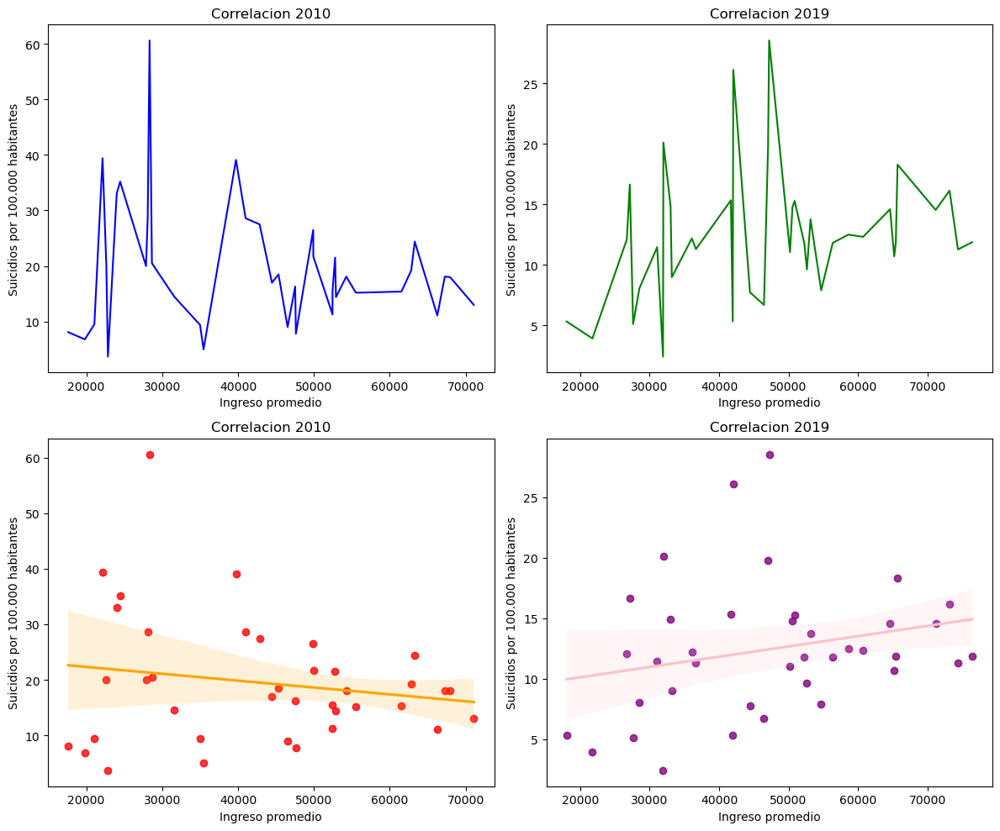
Comparando las correlaciones en 2010 y 2019, notamos una transición de una asociación inversa a una asociación positiva entre ingreso promedio y suicidios por 100,000 habitantes. Este cambio destaca la naturaleza dinámica de las relaciones socioeconómicas y subraya la importancia de considerar múltiples factores en la interpretación de los resultados. Acá, es importante reconocer que la correlación no implica causalidad y que la interpretación de estos resultados debe ser cuidadosa. Además, la aplicación de modelos de regresión lineal proporciona una herramienta valiosa para cuantificar y visualizar estas relaciones complejas. Creemos que un análisis más profundo que considere otros posibles factores influyentes son necesarios para obtener una comprensión más completa de la dinámica entre ingreso promedio y tasas de suicidio.
| ParentLocation | CodigoPais | Location | Dim1 | FVN09 | FVN19 | Aumento_Tasa | |
|---|---|---|---|---|---|---|---|
| 38 | Africa | SWZ | Eswatini | Both sexes | 54.24 | 29.40 | -24.84 |
| 108 | Europe | BLR | Belarus | Both sexes | 36.54 | 21.20 | -15.34 |
| 127 | Europe | KAZ | Kazakhstan | Both sexes | 30.26 | 17.57 | -12.69 |
| 129 | Europe | LTU | Lithuania | Both sexes | 39.16 | 26.14 | -13.02 |
| 141 | Europe | RUS | Russian Federation | Both sexes | 38.43 | 25.11 | -13.32 |
Los 5 países con mayor disminución de tasa de suicidios son Suazilandia, Bielorrusias, Kazajistán, Lituania y Rusia. A excepción de Suazilandia, los países en cuestión pertenecen a Europa del Este.
| ParentLocation | CodigoPais | Location | Dim1 | FVN09 | FVN19 | Aumento_Tasa | |
|---|---|---|---|---|---|---|---|
| 23 | Africa | LSO | Lesotho | Both sexes | 63.27 | 72.44 | 9.17 |
| 63 | Americas | GUY | Guyana | Both sexes | 32.85 | 40.28 | 7.43 |
| 76 | Americas | URY | Uruguay | Both sexes | 14.95 | 21.24 | 6.29 |
| 77 | Americas | USA | United States of America | Both sexes | 12.76 | 16.14 | 3.38 |
| 166 | Western Pacific | FSM | Micronesia (Federated States of) | Both sexes | 24.49 | 28.21 | 3.72 |
En el caso de los 5 países con mayor aumento de la tasa de suicidios tenemos a Lesoto, Guyana, Uruguay, Estados Unidos y Micronesia. Tenemos en este caso 3 de los 5 países que pertenecen a América.
Veremos si existe una tendencia según la localidad del país.
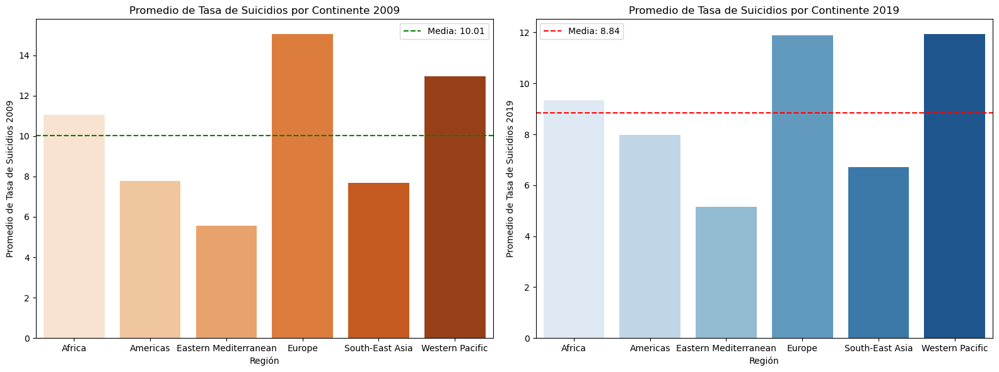
Si bien hubo cambios en el promedio de la tasa de suicidios, se puede observar que existe cierta tendencia en la relación de suicidios según su región.
Un cambio significativo es el de Europa, que disminuyó la diferencia que tenía con los países del Pacífico Oeste, al igual que América con respecto a los países del sureste de Asia,
Podemos ver que a nivel global en la última decada hubo más disminución que aumento en la tasa de suicidios por país, y que hay tendencias según la localidad de estos países, por lo que pueden haber factores que afecten las tasas de suicidios, como cultura, avances en tratamiento de la salud mental, desarrollo económico, etc.
| EDADES | MUERTES | |
|---|---|---|
| 12047 | 25 to 34 years | 10.1 |
| 12048 | 45 to 54 years | 13.7 |
| 12049 | 55 to 64 years | 12.3 |
| 12100 | 35 to 44 years | 11.8 |
| 12101 | 75 to 84 years | 13.8 |
| 12110 | 15 to 24 years | 7.4 |
| 12111 | 85 plus years | 14.5 |
| 12256 | 65 to 74 years | 10.7 |
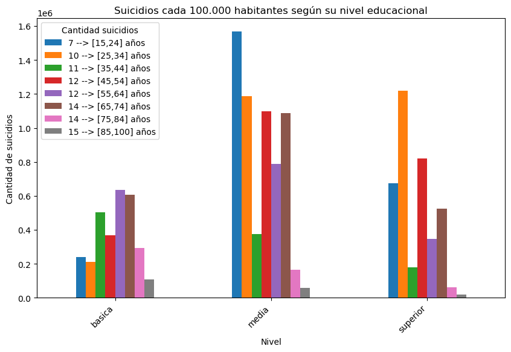
En este caso, se evidencia que la correlación entre el nivel educativo y las tasas de suicidio presenta desafíos para su análisis, dado que la única vía para vincular estos datos se limita a la edad (como lo hemos abordado en este caso) o al género, siendo estas opciones un indicador poco significativo para afirmar que el nivel educativo incide de manera relevante en las tasas de suicidio. En consecuencia, no podemos afirmar con certeza que exista una relación directa entre el nivel educativo y las tasas de suicidio en Chile.
Las tasas de suicidio son fenómenos multifactoriales y no pueden ser atribuidas de manera exclusiva a una única variable, como el nivel educativo. No obstante, es crucial resaltar que la educación puede desempeñar un papel significativo en la salud mental y el bienestar general de las personas. Se requieren investigaciones adicionales para comprender mejor esta correlación. Es esencial tener presente que la prevención del suicidio demanda un enfoque integral que aborde diversos factores, entre ellos la salud mental, el respaldo social y el acceso a la atención médica.
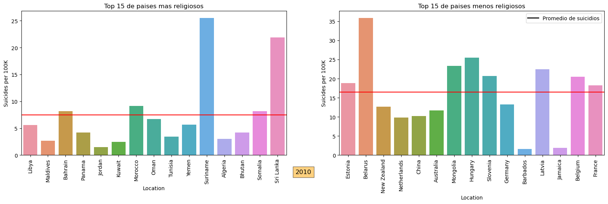
Los paises menos religiosos tienen mayor promedio en su tasa de suicidios respecto a los mas religiosos
| Predominant Religion | Population | Suicides per 100K | Suicides per population | |
|---|---|---|---|---|
| 0 | Buddhists | 2.354434e+08 | 13.85 | 32608.91 |
| 1 | Christians | 1.855450e+09 | 12.02 | 223025.07 |
| 2 | Folk Religions | 1.339725e+09 | 10.24 | 137187.82 |
| 3 | Hindus | 1.211433e+09 | 10.36 | 125504.43 |
| 4 | Jews | 7.623600e+06 | 6.66 | 507.73 |
| 5 | Muslims | 1.108498e+09 | 6.38 | 70722.16 |
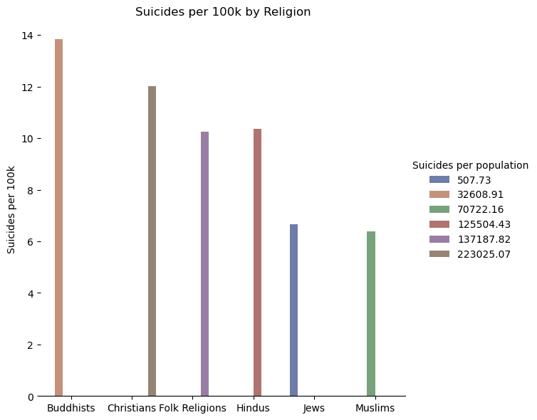
Podemos ver que los Budistas tienen una tasa de suicidios mas alta que el resto de las religiones cada 100.000 habitantes, seguido de los cristianos Si tomamos en cuenta la cantidad de personas que pertenecen a cada religion, podemos ver que los cristianos tienen una tasa de suicidios mas alta que el resto de las religiones, esto se debe a que hay muchas mas personas que pertenecen a esta religion en el mundo. Pero podemos ver un contraejemplo (de 2010) con los 1500 millones de musulmanes con una tasa de suicdios de 6.5 cada 100.000 habitantes, que es menor a la de los 1.100 millones Cristianos en el mundo, con una tasa de 12 cada 100.000 habitantes. Es decir en 2010, los musulmanes tenian una tasa de suicidios 50% menor a la de los cristianos. Por lo que podemos afirmar que hay religiones que tienden a tener menos suicidios que otras.
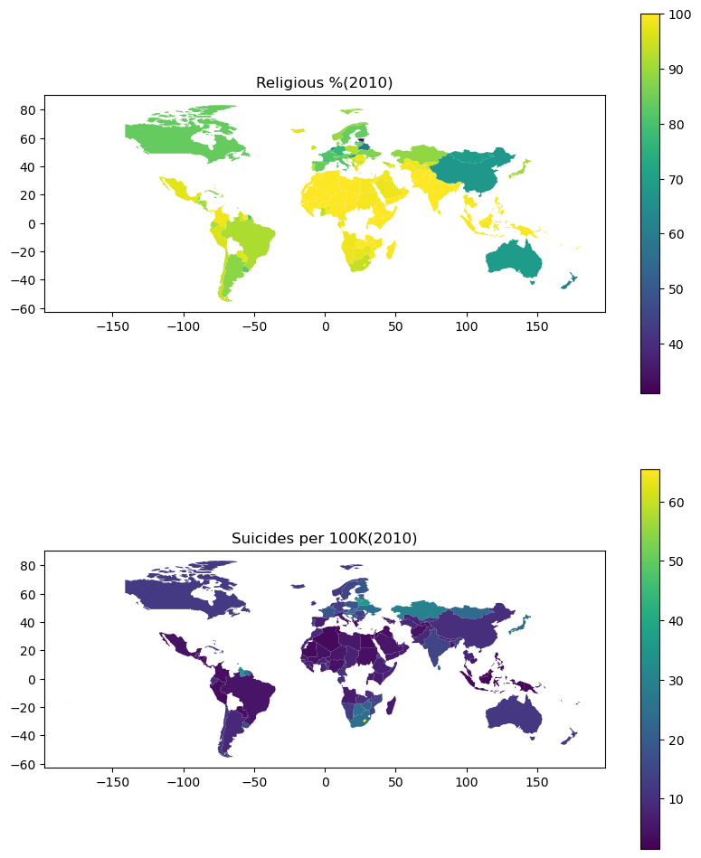
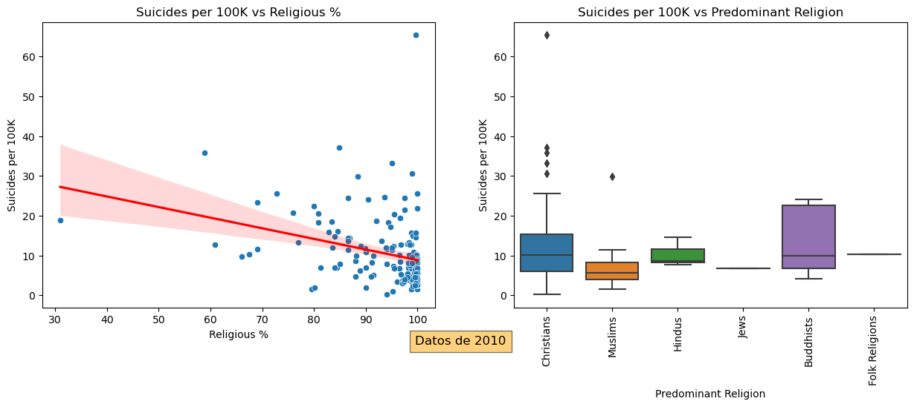
| Region | Country | Suicides per 100K (max) | Religious % | Predominant Religion | |
|---|---|---|---|---|---|
| 0 | Africa | Lesotho | 65.43 | 99.72 | Christians |
| 3 | Europe | Lithuania | 37.24 | 84.79 | Christians |
| 1 | Americas | Guyana | 33.31 | 95.00 | Christians |
| 5 | Western Pacific | Kiribati | 30.70 | 99.00 | Christians |
| 4 | South-East Asia | Sri Lanka | 21.91 | 99.95 | Buddhists |
| 2 | Eastern Mediterranean | Morocco | 9.15 | 100.00 | Muslims |
| Region | Country | Suicides per 100K (min) | Religious % | Predominant Religion | |
|---|---|---|---|---|---|
| 1 | Americas | Antigua and Barbuda | 0.16 | 94.10 | Christians |
| 0 | Africa | Sao Tome and Principe | 1.45 | 98.76 | Christians |
| 2 | Eastern Mediterranean | Jordan | 1.52 | 100.00 | Muslims |
| 5 | Western Pacific | Philippines | 2.36 | 99.07 | Christians |
| 4 | South-East Asia | Indonesia | 2.64 | 99.25 | Muslims |
| 3 | Europe | Greece | 3.48 | 97.39 | Christians |
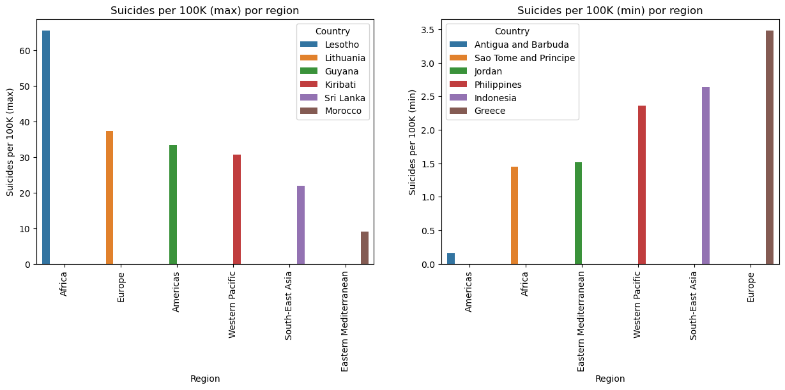
Esto indica que los paises con mas suicidios y menos no tienen una relacion directa con la cantidad de personas que pertenecen a cada religion. Sin embargo, al reves tiene una correlacion negativa, ya que los paises que mas suicidios tienen son los menos religiosos(Como se mostro al principio).
| Predominant Religion | Country | Suicides per 100K | Religious % | |
|---|---|---|---|---|
| 0 | Christians | Lesotho | 65.43 | 99.72 |
| 1 | Muslims | Kazakhstan | 29.94 | 88.48 |
| 2 | Buddhists | Japan | 24.11 | 90.50 |
| 3 | Hindus | India | 14.64 | 99.69 |
| 4 | Folk Religions | China | 10.24 | 67.50 |
| 11 | Folk Religions | China | 10.24 | 67.50 |
| 10 | Hindus | Mauritius | 7.76 | 99.29 |
| 5 | Jews | Israel | 6.66 | 95.50 |
| 9 | Jews | Israel | 6.66 | 95.50 |
| 8 | Buddhists | Bhutan | 4.23 | 99.97 |
| 7 | Muslims | Jordan | 1.52 | 100.00 |
| 6 | Christians | Antigua and Barbuda | 0.16 | 94.10 |
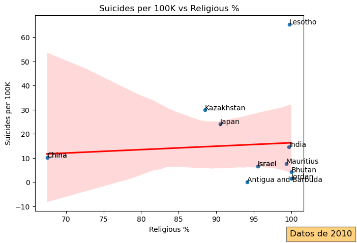
Con esto podemos ver que en los extremos de la distribucion de datos, No parece haber una relacion clara entre la cantidad de suicidios y la cantidad de personas que pertenecen a cada religion. Es decir en el pais con mas y menos suicidios de cada religion, no parecen ser los paises mas o menos religiosos. Al contrario de como vimos al principio, donde los 15 paises menos religiosos, eran los que tenian mas suciidios y no viceversa. Cuando nos vamos a los extremos de los datos, no se ve una correlacion clara, pero si nos vamos a la muestra completa, si se ve una tendencia clara de que los paises menos religiosos tienen mas suicidios que los mas religiosos.
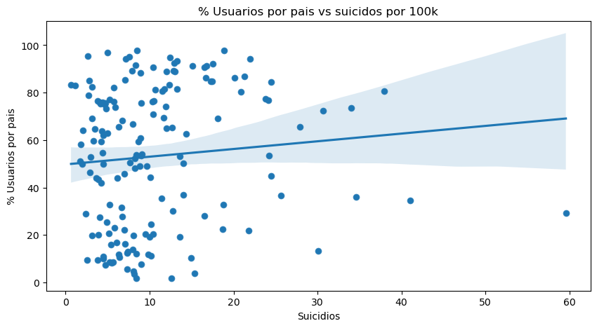
Correlacion por persona de Usuarios de internet y Suicidios % Usuarios por pais Suicidios
% Usuarios por pais 1.0 0.093839
Al calcular la correlacion de Person para cada valor nos daremos cuenta que existe una correlacion practicamente nula en ambos casos por ende diremos que no hay una correlacion directa A NIVEL GLOBAL entre los Usuarios por pais y los suicidios por numero de habitantes.
Ahora si nos fijamos especifiamente en una reguion en espeifica como EEUU en el año 2021 a partir de estos datos podremos ver:
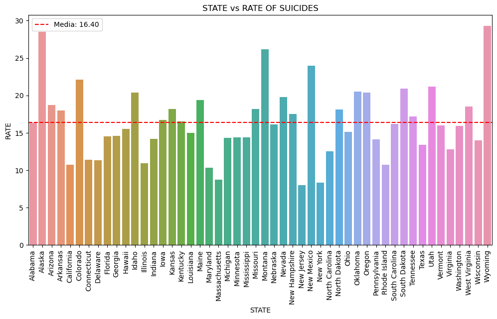
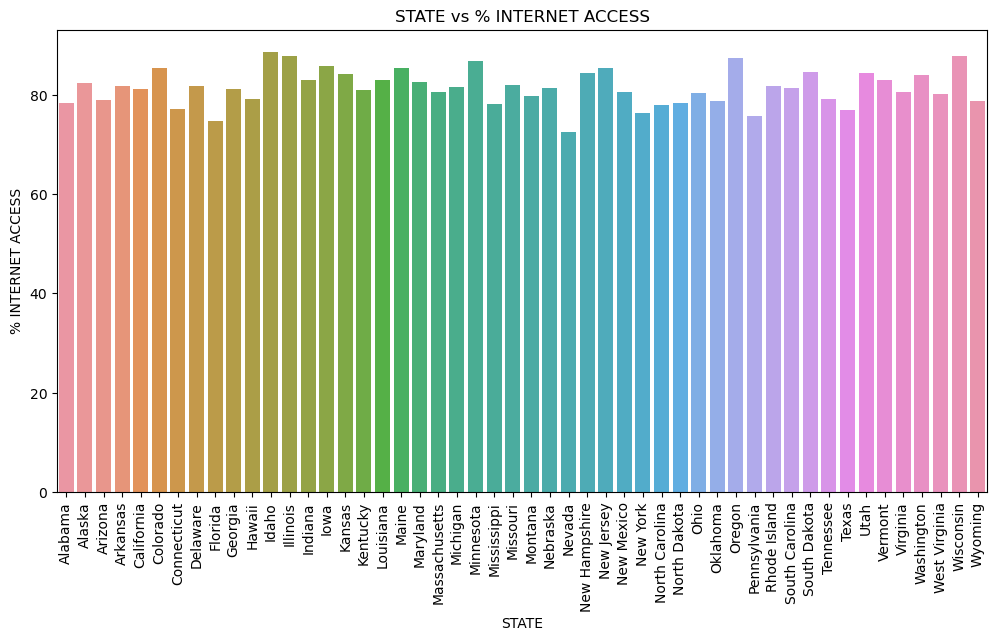
Ahora busquemos una correlacion entre los suicidios por habitantes y el % acceso a internet en los datos de EEUU.
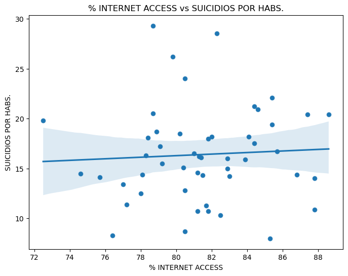
Correlación entre '% INTERNET ACCESS' y 'RATE' es: 0.0586523601686701
La correlación entre '% INTERNET ACCESS' y 'DEATHS' es: -0.2762428321044948
Como se puede ver en EEUU la correlacion entre los Suicidios por Tot. habitantes y por Suicidios tienen muy poca correlacion en ambos casos, por lo que no se puede notar una influencia clara entre el % aceso a internet y los suicidios por habs.
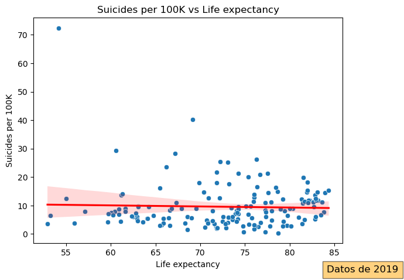
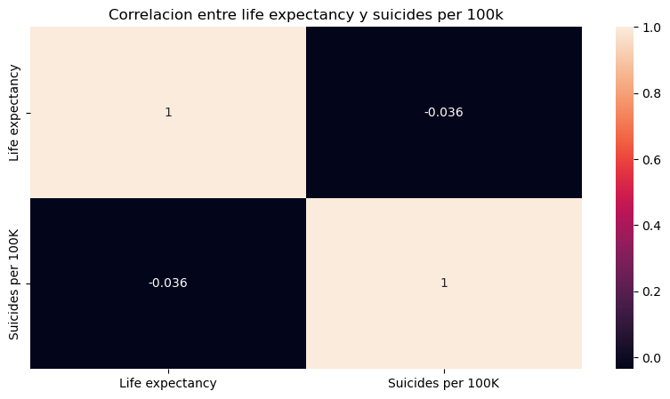
Podemos decir que aunque existe una relación mínima entre la esperanza de vida y las tasas de suicidio en los países, el tamaño del efecto es apenas significativo. Además, se destaca que la esperanza de vida, en sí misma, no explica sustancialmente la variación en las tasas de suicidio entre naciones. Este hallazgo sugiere que, si bien hay una conexión numérica, la esperanza de vida no sirve como un predictor robusto por sí solo para explicar las disparidades observadas en las tasas de suicidio entre distintos países. Es probable que otros factores, no capturados por la variable de esperanza de vida, contribuyan de manera significativa a la variabilidad en las tasas de suicidio.